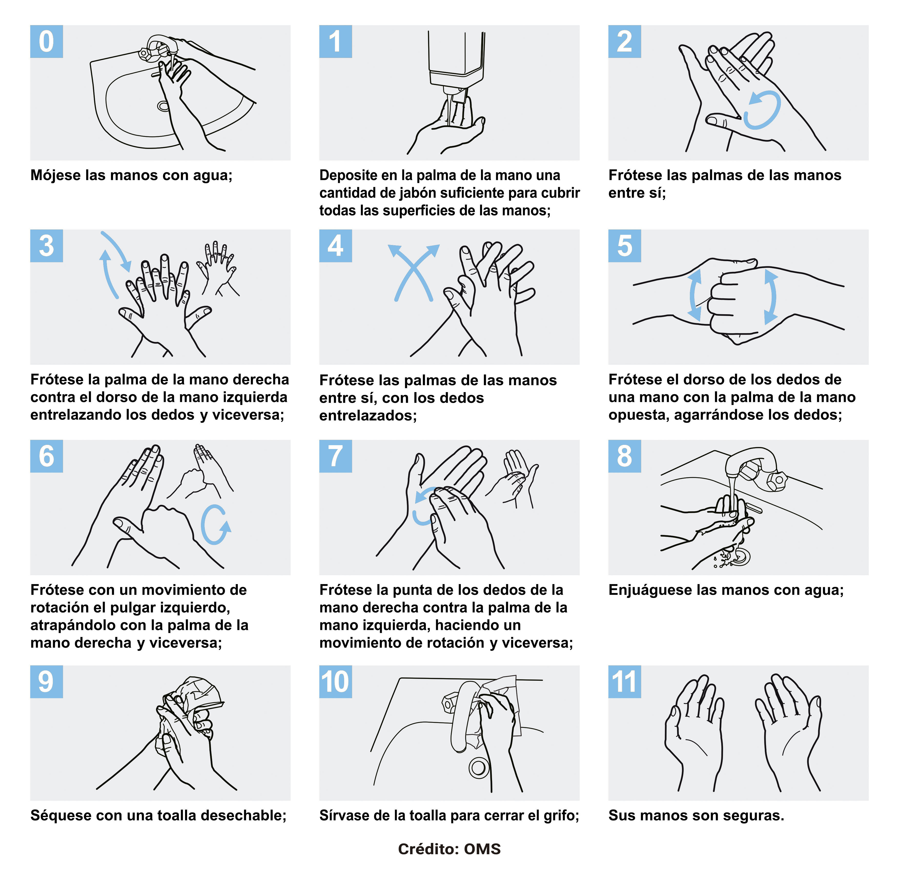
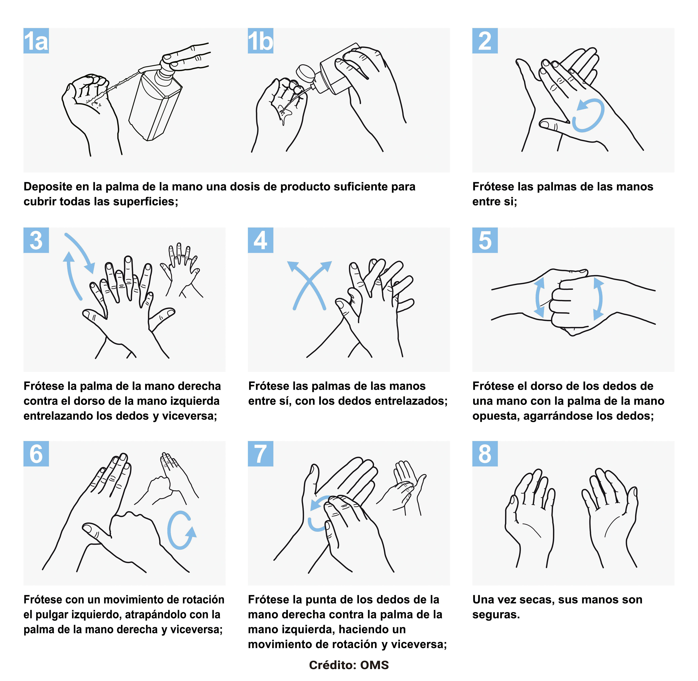

¿Cuáles son los síntomas del coronavirus COVID–19 y cuándo estar alertas?
Los síntomas más comunes son fiebre, tos, dolor de garganta y cansancio.
Algunos casos pueden presentar complicaciones y requerir hospitalización.
Puede afectar a cualquier persona, el riesgo de complicaciones aumenta en mayores de 60
años y personas con afecciones preexistentes (enfermedad cardiovascular, diabetes y
enfermedad respiratoria crónica entre otras).
En caso de presentar síntomas, aunque sean leves, consultar telefónicamente al sistema
de salud. Ejemplo: 107 en CABA, 148 en Provincia de Buenos Aires, 120 a nivel nacional.
Reforzá las recomendaciones de prevención de infecciones respiratorias:
Distanciamiento social (mantenete a un metro de distancia de otras personas).
Lavate las manos frecuentemente con agua y jabón o alcohol en gel.
Tosé o estornudá sobre el pliegue del codo o utilizá pañuelos descartables.
No te lleves las manos a la cara.
Ventilá bien los ambientes de tu casa y de tu lugar de trabajo.
Desinfectá bien los objetos que se usan con frecuencia.
En caso de presentar síntomas, aunque sean leves, consultá inmediatamente al sistema de
salud, siguiendo las recomendaciones locales , para saber cómo hacer correctamente la consulta.
Ejemplo: 107 en CABA, 148 en Provincia de Buenos Aires, 120 a nivel nacional.
En la medida de lo posible, delegá la realización de mandados o compra de medicamentos a
personas de confianza o de tu entorno familiar que no pertenezcan a los grupos de riesgo.
Las personas mayores de 60 años, embarazadas o quienes están dentro de los grupos de riesgo
no deben convivir con personas que vengan desde el exterior.
Poner recomendaciones visuales para que el público. Estos deben contener información adecuada, como la higiene de manos y la apropiada higiene respiratoria.
Tener una adecuada higiene de manos, utilizando agua y jabón; y usar alcohol en gel.
Lavado de manos

Desinfectación

Puntos clave al usar un desinfectante
Chequear la fecha de vencimiento.
Usá acorde a las instrucciones del fabricante, su uso indebido puede resultar en menor o falta de efectividad o puede ser peligroso.
No lo diluyas salvo indicación del fabricante.
No mezcles productos entre sí salvo indicación del fabricante.
Puntos clave al realizar el procedimiento de limpieza
Usá guantes de limpieza habitual.
Lavate las manos con agua y jabón luego de terminar la limpieza.
Evitá salpicaduras en el rostro.
Mientras estés limpiando o utilizando productos de limpieza en casa, no dejes nunca sus recipientes desatendidos en presencia de un niño/a pequeño.
No los ingieras.
Lavate las manosLimpia y desinfectá
Lavá con agua y detergente utensilios y superficies de preparación antes y después de manipular alimentos.
Tomá platos, cubiertos y fuentes por los bordes, cubiertos por el mango, vasos por el fondo y tasas por el mango.
Limpiá y desinfectá varias veces al día instalaciones y espacios que utilizás para preparar/almacenar alimentos.
Tanto en la alacena como en la heladera, consumí primero lo que tenga una fecha de vencimiento más cercana.
Seleccioná frutas y verduras limpias, enjuagándolas con agua para eliminar tierra e impurezas.
Evitá la contaminación entre alimentos crudos y cocidos
Los alimentos crudos pueden estar contaminados y trasladarse a los alimentos cocidos o listos para comer.
Separá siempre los alimentos crudos como pollos, carnes y pescados, de los cocinados y de los listos para comer.
Conservá los alimentos en recipientes separados para evitar el contacto entre crudos y cocidos.
Usá utensilios diferentes, como platos, tenedores, cucharas, para manipular alimentos crudos y cocidos.